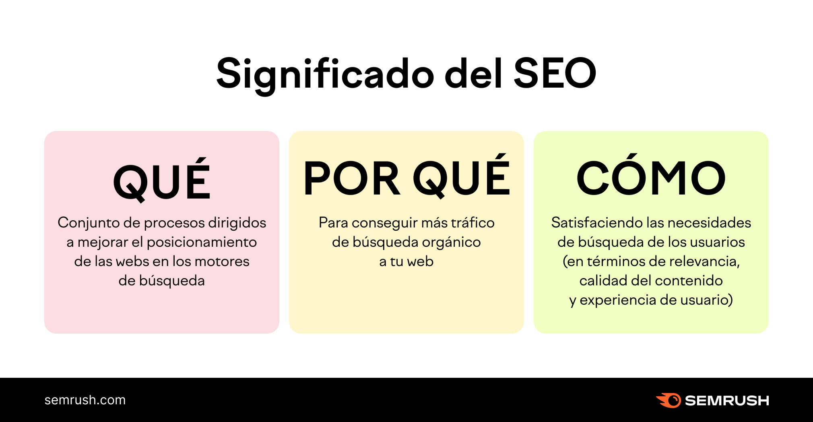

SEO
SEM
Visibilidad
A la hora de responder qué es SEO podemos empezar por lo que significan sus siglas:
Search Engine Optimization, es decir, Optimización de los Motores de Búsqueda. El SEO
se explica como un conjunto de técnicas y estrategias para mejorar la visibilidad y
el posicionamiento web de un sitio dentro de los resultados orgánicos de motores de
búsqueda como Google o Bing. También incluye SEO on-page y SEO off-page.

El SEM (Search Engine Marketing) consiste en utilizar anuncios pagados dentro de los
motores de búsqueda para generar visibilidad rápida. Normalmente se trabaja mediante
Google Ads y se paga por clic (PPC) o por impresión. Es útil cuando se quiere tráfico
inmediato, lanzar productos o competir donde el SEO aún no es fuerte. Permite segmentar
a los usuarios por edad, intereses, ubicación y más.

La visibilidad en resultados significa qué tan arriba y qué tan frecuentemente aparece
tu sitio cuando las personas hacen búsquedas relacionadas. No solo se trata de estar en
Google, sino de ser visible, tener un buen título, una buena descripción y aparecer en
posiciones relevantes. Depende del SEO, del SEM, de la experiencia del usuario y de la
relevancia del contenido.